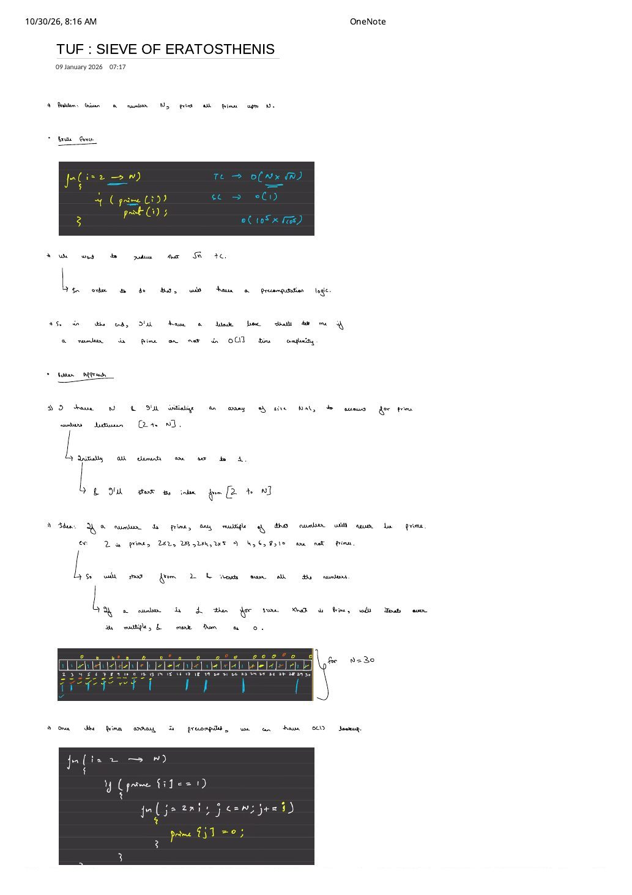
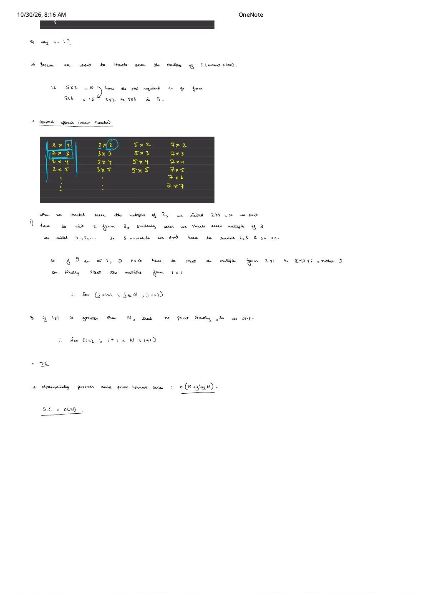

Sieve of Eratosthenes: $O(N \log \log N)$ Primality Precomputation
Expanded from handwritten competitive coding study note: 06_TUF_SIEVE_OF_ERATOSTHENIS.pdf (2 pages)
Suppose we need to print all prime numbers up to $N$—or answer $Q$ queries asking whether $x \in [1, N]$ is prime in $O(1)$ time per query. Testing each integer independently in $O(\sqrt{i})$ time costs $O(N\sqrt{N})$, which becomes too slow when $N \ge 10^6$. The Sieve of Eratosthenes flips the problem on its head: instead of testing whether each number has a divisor, each discovered prime proactively crosses out all of its composite multiples in nearly linear $O(N \log \log N)$ time.
1. The $O(N \sqrt{N})$ Brute-Force Bottleneck
Calling our optimal $O(\sqrt{i})$ primality test inside a loop from $2$ to $N$ gives:
// Brute force: O(N * sqrt(N)) time, O(1) extra space
for (int i = 2; i <= N; i++) {
if (isPrimeSqrt(i)) {
cout << i << ' ';
}
}For $N = 10^5$, $N\sqrt{N} \approx 3.16 \times 10^7$ modulo operations; for $N = 10^7$, $N\sqrt{N} \approx 3.16 \times 10^{10}$, blowing far past a $1\text{-second}$ limit. Worse, if a contest problem asks $10^6$ queries on $[1, N]$, we want a precomputed black-box boolean array prime[0..N] that answers primality in $O(1)$ time.
2. Basic Sieve Idea & Dry Run on $N = 30$
- Allocate an array
primeof size $N + 1$ to cover indices $[0 \dots N]$. - Mark
prime[0] = prime[1] = 0, and initialize every entry in $[2 \dots N]$ to1(assumed prime until proven composite). - Core invariant: Iterate $i$ from $2$ upward. Whenever
prime[i] == 1, no smaller prime divided $i$, so $i$ is guaranteed to be prime! Conversely, every proper multiple $2i, 3i, 4i, \dots \le N$ has $i$ as a proper factor and can never be prime—so markprime[j] = 0. - Why step by
j += i? Because consecutive multiples of $i$ are spaced $i$ apart (for $i = 5$: $5 \times 2 = 10 \xrightarrow{+5} 5 \times 3 = 15 \xrightarrow{+5} 5 \times 4 = 20$).
3. Optimal Sieve: Why Start at $j = i \times i$ and Stop at $i \times i \le N$?
In the basic sieve, the inner loop begins at $j = 2 \times i$ and the outer loop runs up to $i \le N$. Inspecting the handwritten multiplication columns for primes $2, 3, 5, 7$ unlocks two tight optimizations:
| Prime $i = 2$ | Prime $i = 3$ | Prime $i = 5$ | Prime $i = 7$ |
|---|---|---|---|
| $2 \times 2 = 4$ (start) | $3 \times 2 = 6$ (seen at $2 \times 3$) | $5 \times 2 = 10$ (seen at $2$) | $7 \times 2 = 14$ (seen at $2$) |
| $2 \times 3 = 6$ | $3 \times 3 = 9$ (start) | $5 \times 3 = 15$ (seen at $3$) | $7 \times 3 = 21$ (seen at $3$) |
| $2 \times 4 = 8$ | $3 \times 4 = 12$ | $5 \times 4 = 20$ (seen at $2$) | $7 \times 4 = 28 \dots 7 \times 6 = 42$ (seen) |
| $2 \times 5 = 10 \dots$ | $3 \times 5 = 15 \dots$ | $5 \times 5 = 25$ (start) | $7 \times 7 = 49$ (start) |
- Inner Loop Starts at $j = i \times i$: Any smaller multiple $k \cdot i$ with $2 \le k \le i - 1$ has a prime divisor $p \le k \lt i$, so
prime[k * i]was already set to0when outer pass $p$ ran. Starting directly atj = i * iskips all redundant prefix multiples. - Outer Loop Stops at $i \times i \le N$: Once $i \times i \gt N$, the inner loop condition
j <= Nfails before its very first iteration! Every unmarked number larger than $\sqrt{N}$ is already guaranteed prime because any composite $\le N$ must possess at least one prime factor $\le \sqrt{N}$.
Why Both Bounds Belong Together (32-Bit Signed Overflow Guard)
If you keep the outer loop as for (int i = 2; i <= N; i++) while changing only the inner loop to for (int j = i * i; j <= N; j += i), then as soon as $i = 46349 \gt \sqrt{2^{31}-1}$ (for $N = 10^5$), i * i overflows signed 32-bit int into a negative number and causes out-of-bounds memory corruption! Stopping the outer loop at i * i <= N guarantees $i^2 \le N$ fits safely in int for any $N \le 2 \times 10^9$.
4. Prime Harmonic Series Complexity ($O(N \log \log N)$)
Compare the Sieve of Eratosthenes against CSES 1713's divisor sieve from 01: IIIT Math Foundations:
- In CSES 1713, every integer $i \in [1, N]$ executes the inner loop, summing $\sum_{i=1}^{N} \frac{N}{i} = O(N \log N)$.
- In the Sieve of Eratosthenes, only prime numbers $p \le \sqrt{N}$ enter the
if (prime[p])branch!
Mertens' Second Theorem & the Prime Harmonic Sum
Summing the inner-loop work exclusively over prime denominators $p \le N$ gives:
$$\text{Work} \le \sum_{p \le \sqrt{N},\; p \text{ prime}} \frac{N}{p} \le N \left(\frac{1}{2} + \frac{1}{3} + \frac{1}{5} + \frac{1}{7} + \frac{1}{11} + \dots \right) = N \cdot (\ln \ln N + M) = O(N \log \log N)$$where $M \approx 0.2615$ is the Meissel–Mertens constant. Because $\log_2 \log_2(10^7) \approx 4.5$, $O(N \log \log N)$ behaves like a tiny constant multiple of $O(N)$ in practice!
5. Production C++ Implementation
#include <bits/stdc++.h>
using namespace std;
vector<bool> buildSieve(int N) {
vector<bool> prime(N + 1, true);
if (N >= 0) prime[0] = false;
if (N >= 1) prime[1] = false;
// Outer loop stops at i * i <= N; inner loop starts at j = i * i
for (int i = 2; i * i <= N; i++) {
if (prime[i]) {
for (int j = i * i; j <= N; j += i) {
prime[j] = false;
}
}
}
return prime;
}
int main() {
int N = 30;
vector<bool> prime = buildSieve(N);
// Extract or print all primes in [2, N] — O(1) lookup per number!
for (int x = 2; x <= N; x++) {
if (prime[x]) cout << x << ' ';
}
cout << '\n';
return 0;
}
// Precomputation Time: O(N log log N) | Per-Query Lookup: O(1) | Space: O(N)From the Handwritten Notes
Expand the original handwritten pages below to inspect the exact derivations, dry runs, and annotations:
View original note — TUF: Sieve of Eratosthenes (Page 1: $O(N\sqrt{N})$ Brute Force, Precomputation Black Box & $N = 30$ Trace)


prime[2..N] = 1, and crossing out composite multiples on $N = 30$.View original note — TUF: Sieve of Eratosthenes (Page 2: j += i, Starting at i * i, Stopping at i * i <= N & $O(N \log \log N)$)

